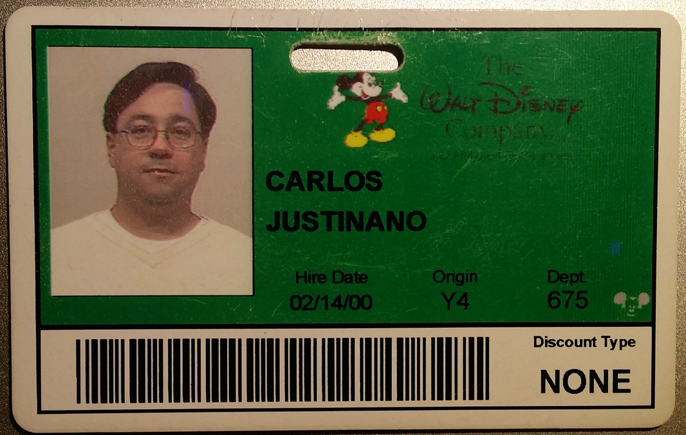
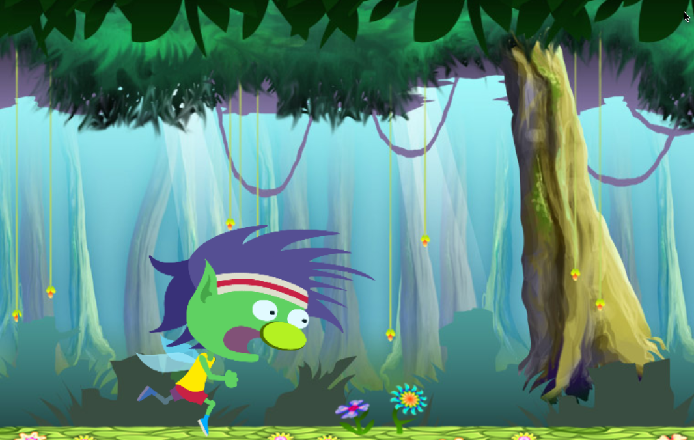
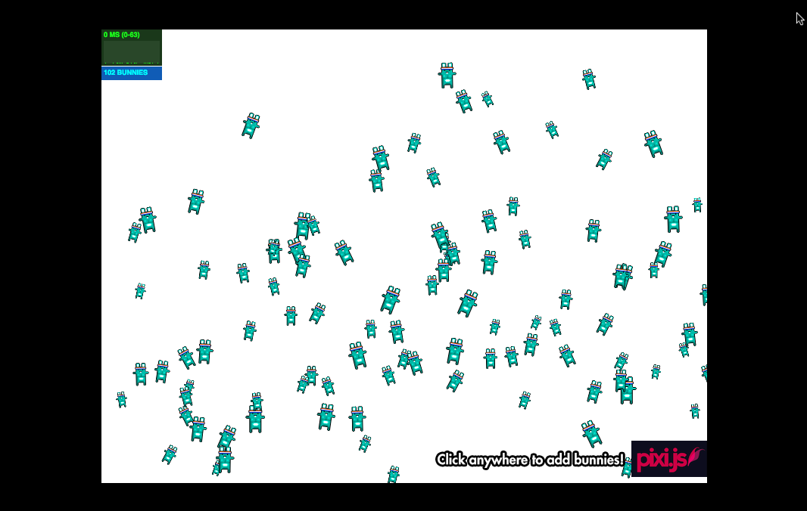

About me
Carlos Justiniano, HC.JS founder and a long-time programmer
Games programmer in the 90s
Wrote my own sprite animation library and game engine in C++
I posted on Github in 2010: https://github.com/cjus/s34mme
---
A few words about me as they pertain to this presentation.
I'm Carlos Justiniano, the HC.JS founder and a long time programmer.
In my earlier life as a games programmer I wrote a game engine which featured sprite animation for use on earlier versions of Windows.
In 2010 I posted the code on GitHub.

I was also a contractor at Disney Interactive "back in the day"
---
I was a former contractor at Disney Interactive working on a game engine.
So, what's this Pixi.js thing?
It's a JavaScript based graphics rendering library for HTML5
It works across all modern browsers on both desktop and mobile
It will use hardware accelerated WebGL or fallback to HTML5 Canvas
---
Pixi.js is a JavaScript rendering library for HTML5. It allows you to manage graphic objects and to animate them in
various ways.
It also works across all modern browsers on both desktop and mobile.
As an aside: the term "renderer" is used to describe a tool which displays and allows for the manipulation of graphics
before they are shown on a display.
Pixi.js renders graphics using WebGL if the target browser supports it, or otherwise falls back to canvas rendering
if necessary.
The result is that Pixi.js leverages hardware accelerated WebGL for maximum speed. For anyone who doesn't know what
WebGL is, it stands for Web Graphics Library, and it's the web descendant of OpenGL which has been used for decades
in popular PC and console games.
A key benefit of Pixi.js is that it allows developers to leverage the power of hardware acceleration without prior
knowledge of webGL.
What Pixi.js is not
Pixi.js is not a game engine or game framework
It only has support for rendering and not things like collision detection and physics
Can be used as the basis of game engines / frameworks, such as Phaser (https://phaser.io/)
---
Pixi.js is not a game engine. For example, a specific game engine or framework might include support for things like collision
detection between objects, physics interactions, and support for a game's artificial intelligence. Pixi.js does not.
Instead, Pixi focuses on managing assets and rendering. It can be used as the the renderer for a full-fledge game engines.
The Phaser game engine is an example of a framework that uses Pixi for its rendering.
Pixi recap
Focuses on managing graphics and displaying them (rendering)
Allows you to do things like: load images, move them, rotate them, change their color, opacity and tint
You can also add graphic objects to a container and move the container as a unit
In short, you can use Pixi to animate scenes of graphical objects
---
So just a quick recap. Pixi is a renderer which allows you to manage graphics.
You can do things like loading iamges, moving them about, changing their color, opacity and tint.
You can create relationships between objects so that moving one object might move related object.
You can also create a container for object and treat them in a uniform manner.
So in short, Pixi allows you to manage a scene containing graphical objects.
Pixi.js History
Launched in February 2013 by Matt Groves of GoodBoy Digital
Has improved steadily since then to include many impressive features
Used in project for clients like Disney, PBS Kids, BBC, McDonald's and many others
Winner of numerous industry awards
---
In February 2013, Matt Groves of GoodBoy Digital announced Pixi.JS in a blog post and Github upload.
GoodBoy Digital is an HTML5 Games Consultancy in London with an impressive list of clients.
During the past two years, Pixi.JS has grown to include a host of amazing features making it ideal for desktop
and mobile development on smartphones and tablets.
Pixi Demo 01

http://www.pixijs.com/examples/
---
So here's an example of Pixi.js in action. What you're seeing is not an animated gif or movie clip.
It's actually a scene created and managed using Pixi.js.
The effect you're seeing is known in the game industry as parallax scrolling and this style of game is know as a
platform game.
Pixi Demo 02

http://www.pixijs.com/examples/
---
And here's another demo.
Notice we start off with two bunnies. Pixi.js is being used to load a single bunny image and then creates two bunnies sprites.
A sprite is a container for an image.
Because Pixi doesn't include a physics engine, the code to handle the sprite velocity, direction and rotation is written outside of Pixi.
Ok, let's get this party started. After we click we see a lot more bunnies, each being managed independently.
What about the HTML5 <canvas>?
Canvas is a element for creating graphics using JavaScript
Originally introduced by Apple in 2004
Between 2005 and 2006 it was included in other browsers
Standardized by the Web Hypertext Application Technology Working Group
---
Before we go further into Pixi.js you might be wondering about the HTML5 Canvas element.
If you haven't worked with Canvas, it's basically an HTML5 element that defines an area on a web page which can be used to draw and display images using JavaScript.
It was originally introduced by Apple in 2004, then later added by other browsers during 2005 and 2006.
It was later standardized by the Web Hypertext Application Technology Working Group as a web standard.
HTML5 <canvas>?
An HTML5 element "for dynamic, scriptable rendering of 2D shapes and bitmap images. It is a low level,
procedural model that updates a bitmap and does not have a built-in scene graph." - wikipedia
---
According to Wikipedia, Canvas is an HTML5 element "for dynamic, scriptable rendering of 2D shapes and bitmap
images. It is a low level, procedural model that updates a bitmap and does not have a built-in scene graph."
A key point in that definition is that Canvas is low-level, lower-level than Pixi.js in some ways.
Canvas doesn't have a built-in scene graph or a way of managing graphic elements for display. That's an implementation
detail left to you, the developer.
Let's take a brief look at canvas.
Canvas Demo
---
This is an HTML5 canvas demo which randomly displays blue and red spheres.
---
In this HTML markup, on line 8, we specify the canvas element with an ID of "canvas-demo-01".
Then we load our JS file, on line 9, to work with the canvas element.
---
First we access the canvas element by its ID on line 18.
Next we retrieve a drawing context for use with drawing on line 19.
We then setup a a main loop, on line 24, where we'll draw each frame of animation. Notice the call to requestAnimationFrame, on line 33, which essentially calls back to our main loop.
requestAnimationFrame is an API which knows when the screen is about to be refreshed at a hardware level and only called our main loop during a screen redraw cycle. This prevents us from using a timer which wouldn't be as fast or efficient.
So the mainloop first fills the background with a solid black colored rectangle. Then it enters a loop to display twenty spheres at random locations.
A quick note on this rendering loop thing. The creation of a rendering look and the syncing to the display refresh rate is
fundamental to almost all games. We update the game world and update the display based on screen refresh. In JavaScript, this is assisted by the requestAnimationFrame which invokes are rendering code.
And that's HTML5 animation in a quick pass. Another key take-away here is that we're managing both the drawing and redrawing of spheres using low-level graphics APIs.
We're not thinking about a sphere as an object which has a position and other properties.
That's really where Pixi.js comes in - it abstracts many of the details you'd otherwise have to deal with - even for the simplest of tasks.
My recent involvement with Pixi
I was recently asked to advise for two projects:
An authoring system for children's books and a polling application plugin
I found Pixi to be ideal for both projects
---
Friends of mine who are building two very different applications. One is an authoring system for children's books,
and the other is a polling application plugin for websites.
In both cases they needed to manage the display of graphics and animation.
I recommended they use Pixi.js and they asked me to help with the coding.
Here's a video clip of the rendering component for the childen's book authoring system.
Under the hood
---
Let's look at some of the Pixi code used to achieve that level of functionality.
---
One of the first things we do with Pixi (after we load the pixi.js script) is to create the stage object. We do this on line 41.
The stage is where graphics appear. You can add and remove graphic objects from the stage at will.
The next line (42) we ask Pixi to create a renderer. The renderer will do the work of displaying graphic elements.
So because I work in AngularJS, I'm saving the stage and renderer on the scope - for later use on lines 44 and 45.
On line 52 I call requestAnimFrame. This will initialize the main rendering loop.
We're now ready to load images and create more feature rick sprite objects.
---
In this code fragment, on line 115, I use the PIXI.ImageLoader to, you guessed it!
Load an image.
When an image is loaded, a texture is created and then a sprite is created on line 118.
The idea here is that you only want to load a specific image once and use it to create how ever many sprites you need.
So the texture (image data) is placed in a texture cache.
I then proceed to initialize the sprites position relative to the stage.
---
In this next bit of code I'll share how I setup events on sprite object using Pixi.js.
Firstly, this function accepts a sprite object.
On lines 146 and 148 I set the sprites properties to respond to mouse and touch events.
An important point here is that devices like phones and tablets have touch events, whereas desktop browsers have mouse events.
Another important point is that not all sprites in your scene will need to respond to mouse and touch events.
So setting this only on sprites that need it is an optimization!
In line 151 I'm assigning an anonymous function to the sprite's mousedown and touchstart properties. On line 155 I also flag the sprite as being draggable.
Lines 164 through 170 turns off dragging during mouseup, mouseupoutside, touchend and touchendoutside events.
Starting on line 173 I handle the mousemove and touchmove event to update the sprites position.
Quick recap
Unlike the HTML Canvas, Pixi.js works with objects such as sprites and a stage
The result is a higher level of abstraction
---
Unlike the HTML Canvas, Pixi.js allows you to work with objects such as sprites and a stage.
This is because Pixi.js helps you manage your scene, while allowing you to work at a higher level of abstraction.
Pixi and friends
Pixi.js focuses on rendering and managing your scene graph
So, it's only part of a larger picture when it comes to building a product
Lots of tools work with Pixi to add realistic physics, see: matter.js, physics.js
There are also authoring tools which output files in a format that Pixi can work with - see: TexturePacker and
Spine
---
As we've seen, Pixi.js is only one part of the code that a game or interactive module might need.
There are lots of tools that you can use in conjunction with Pixi.js.
Checkout the matter.js and Physics.JS engines.
There are also design and authoring tools which produce files which Pixi an work with: See TexturePacker and Spine.
I was super impressed with Spine...
Pixi highlights
Dedicated rendering, super fast!
Multi-platform: use pixi on desktop and mobile devices
Support for multi-touch interactivity
Special visual effects using WebGL filters
Support spite sheets and spine data
Manage scene graph
Load assets locally and remotely via the web
Support for rendering text
Easy to use API, familiar interface for ex-flash developers
Learn more at: http://www.Pixi.js.com
Contact
cjus on Twitter and Github
Email: cjus34@gmail.com
About: http://cjus.me